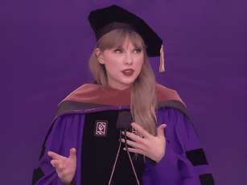

|
Computer Vision Researcher @ Alibaba Group |
|
Biography
I’m Yuxiang Zhao (赵煜翔), currently a Computer Vision Researcher at Alibaba AMAP CV Lab, where I explore the cutting-edge frontiers of Embodied Artificial Intelligence. Previously, I worked at Baidu on controllable generation technologies for anime-style content. I graduated from Sun Yat-sen University in 2024, and my research focuses on building Large Motion Models capable of capturing, understanding, interacting with, and generating the motion of humans, animals, and the world.
News
- 11/2025 Invited to serve as a reviewer for CVPR 2026.
- 11/2025 One paper on expressive human pose and shape estimation was accepted to AAAI 2026, see you in Singapore!
- 09/2025 Invited to serve as a reviewer for ICLR 2026.
- 08/2025 Invited to serve as a reviewer for AAAI 2026.
- 07/2025 One paper on embodied artificial intelligence was accepted to ACMMM 2025, see you in Dublin!
Selected Research
|
3 Lines of Code to Achieve 100% Speedup in Human Animation
An efficient and accurate human animation method proposed with only 3 lines of code modification.
|
|
|  |
CoEvoer: Collaborative Evolution Transformer for Upper-Body Expressive Human Pose and Shape Estimation
One-stage mesh recovery with explicit modeling of human body part interactions.
|

|
Fine-Grained and Controllable Conditional Video Generation
Mitigating blurring in video generation under first-last frame constraints.
|